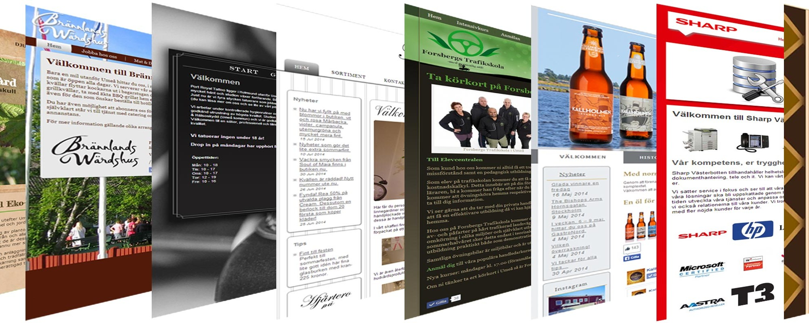
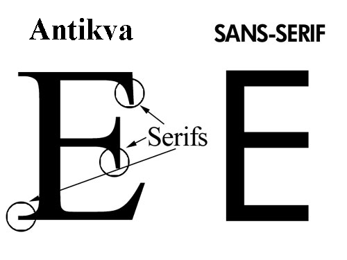
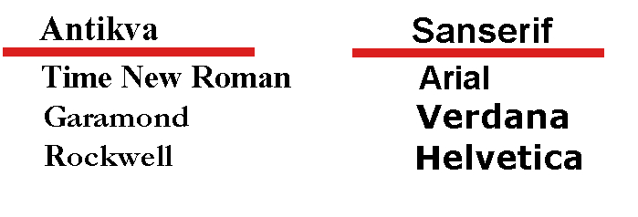
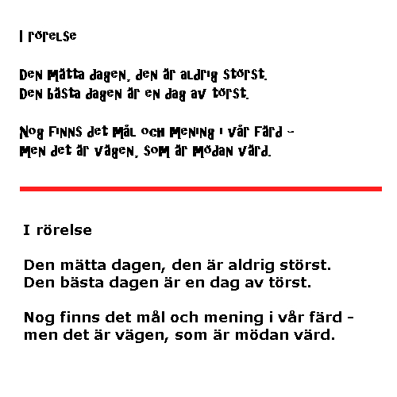
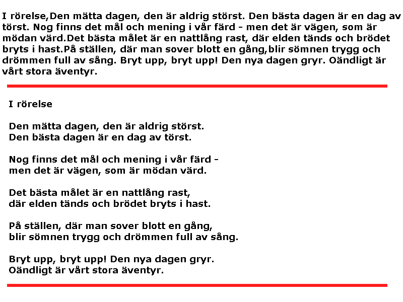

Typografi är läran om bokstävers, siffrors och andra teckens formgivning och deras förhållande till varandra.
Hemsidor och läsbarhet

Det vi direkt kan påverka är
- Typsnitt
- Storläk
- Radlängd
- Radavstånd
Typsnitt är upp delade i två grupper

6 av de vanligaste typsnitten

väljer man fel typsnitt kan budskapet gå förlorat

Det är inte självklart att en text är mer lättläst för att den är större.
Den tar mer plats och kan vara irriterande att ta sig genom
exmpel på en dålig radlängd och ett bra

slut ord
- God typografi ökar läsbarheten
- God typografi är inte samma sak som bra kommunikation